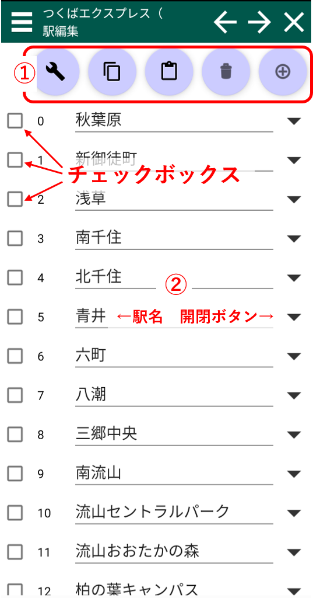
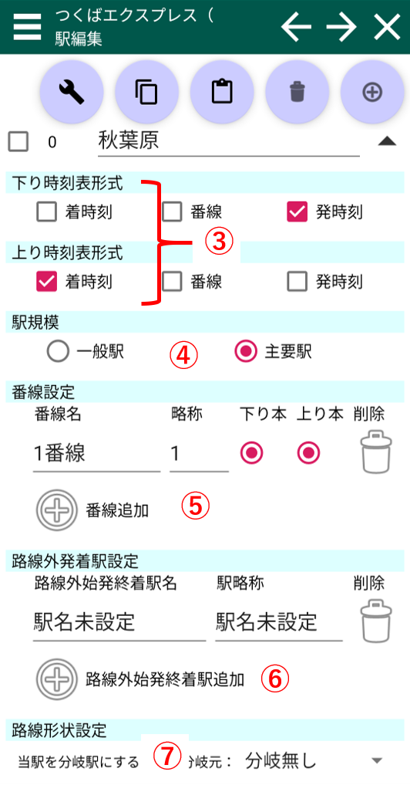
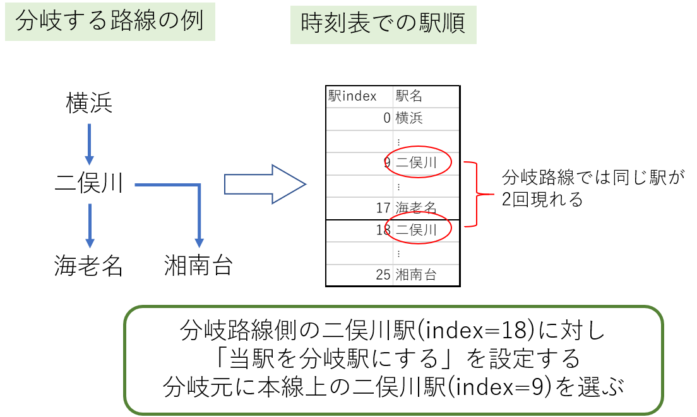

駅編集画面
スクショの番号に対応した説明があります。
①：駅操作画面
路線切り出し・組み入れダイアログを開きます。 チェックを入れた駅を全てコピーします
チェックを入れた駅を全てコピーします 最初にチェックが入っている駅の直前に、コピーされた駅を挿入します。すべての駅がチェックされていなかれば、末尾に追加されます
最初にチェックが入っている駅の直前に、コピーされた駅を挿入します。すべての駅がチェックされていなかれば、末尾に追加されます チェックを入れた駅全てを削除します
チェックを入れた駅全てを削除します 最初にチェックが入っている駅の直前に、新規駅を挿入します。すべての駅がチェックされていなかれば、末尾に追加されます
最初にチェックが入っている駅の直前に、新規駅を挿入します。すべての駅がチェックされていなかれば、末尾に追加されます②各駅編集
駅名は直接編集が可能です。その他の項目を編集するときはボタンで詳細項目を表示できます。駅詳細編集画面
③：時刻表形式設定
路線時刻表において、チェックが入った項目が表示されます。④：駅規模
主要駅は強調表示されることがあります。⑤：番線設定
- 下り本：下り主本線（下り列車がデフォルトで使用する番線です）
- 上り本：上り主本線（上り列車がデフォルトで使用する番線です）
 番線を削除します。（主本線に設定された番線は削除できません）
番線を削除します。（主本線に設定された番線は削除できません）番線を追加します。番線追加先は末尾のみです
⑥：路線外発着駅設定
この路線以外に直通する列車が存在するときに使います。 路線内でこの駅を始発・終着する列車があるとき、直通先本来の終着駅となりうる駅を入力してください。 ここで入力した駅が列車編集で路線外始終着駅の候補として使われます。路線外発着駅を削除します。（列車により使用されている駅は削除できません）路線外発着駅を追加します。追加先は末尾のみです
⑦：分岐駅設定
路線が分岐している場合、その情報を駅に含める必要があります。 本アプリの分岐駅設定方法はOuDia2ndに準拠しています。参考(境界線設定の廃止と、分岐駅設定・環状線設定の追加)
▲分岐駅設定の例
OuDiaの「境界線」を設定する事はできません。